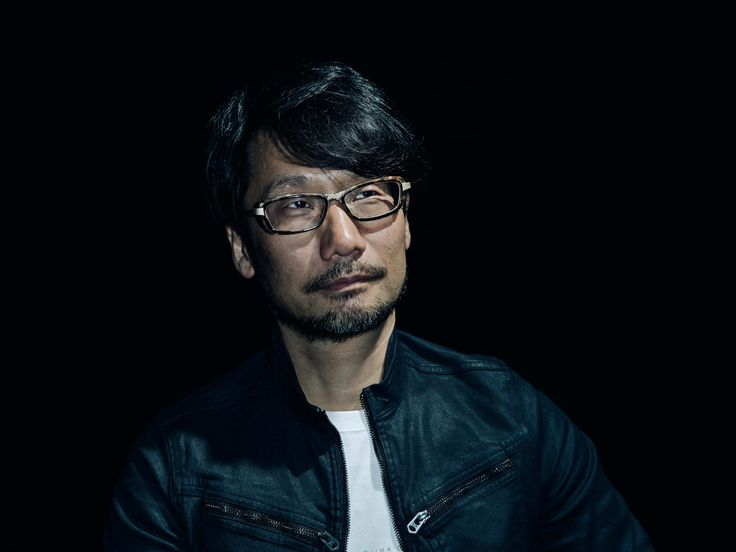
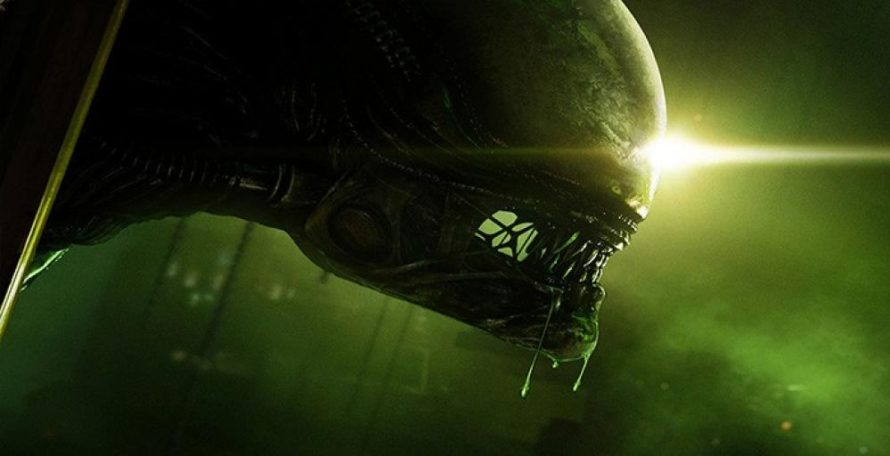

Ищем ответы на все эти вопросы в игровых воспоминаниях из:
5 лет назад — Metal Gear Solid V: Ground Zeroes В марте 2014-го разом вышли Dark Souls II, Hearthstone и Titanfall. Тем интересней то, что в центре внимания геймерской публики при этом всё равно оказалась Metal Gear Solid V: Ground Zeroes — коротенькая демка-пролог для Phantom Pain, которую можно было пробежать за полчаса. Или пять часов. Или десять. Зависело только от вашего упорства: перепройти единственное основное задание можно было десятком (и это в кои-то веки не преувеличение) разных способов, и это не считая постепенно открывающихся побочных квестов.
Но больше всего Ground Zeroes радовала, конечно, не обилием контента, а возможностью хоть одним глазком взглянуть на будущий шедевр Хидэо Кодзимы.
Предприимчивые Konami требовали за это удовольствие 30$ на Западе и 60$ в России, но цена мало кого останавливала. Серия, которая и до этого слыла легендарной, круто эволюционировала — и всем не терпелось увидеть, как именно. У игрока наконец появилась полная свобода действий (и в кои-то веки удобное управление!), механики стали разнообразнее, противники поумнели, а качество графики взлетело до уровня лучших представителей жанра. Словом, не будь Ground Zeroes демкой, ей наверняка достался бы титул «стелса года» (в итоге он всё-таки ушёл Alien: Isolation).
